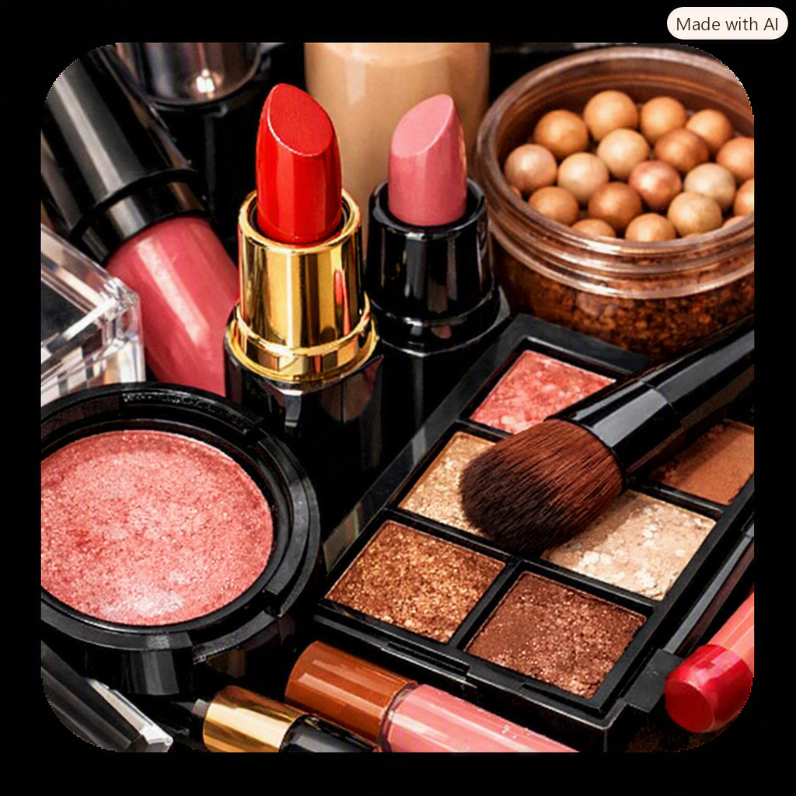

Macarrão ao molho branco é uma massa cremosa feita com creme de leite, leite e temperos suaves,
enquanto o strogonoff é um prato clássico brasileiro de carne ou frango com molho encorpado de creme de leite,
ketchup e mostarda,
servido com arroz e batata palha. Ambos são rápidos, saborosos e muito populares em almoços e jantares no Brasil.

Melhores Marcas de Maquiagem
Por: Maria Julia Vesco
MAC: acabamento profissional.
Maybelline: bom custo-benefício.
Fenty Beauty: diversidade de tons e inovação.